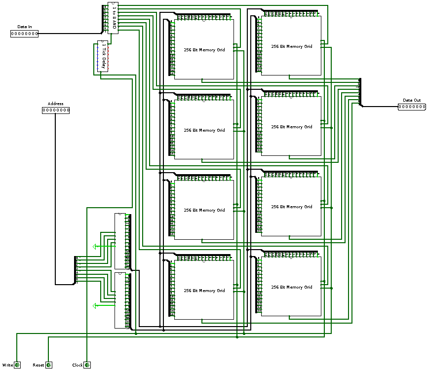
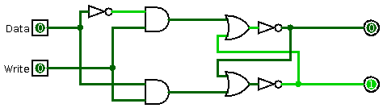
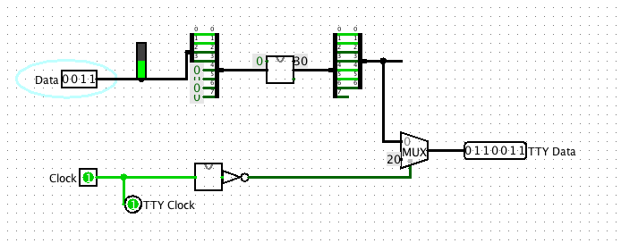

We set out to make a computer in Logisim, but we decided to instead build whatever components we felt like. What came out of this were an 256-Byte RAM, an 8-Bit adder and a TTY Controller.
This component allows the storage of 256 Byte of Data. It has an address width of 8 bit, as well as an 8-bit data input and an 8-bit data output line. Furthermore, there's a reset input which sets the contents of all cells to 0x00, a "write" input which determines whether or not the data at the input line should be written into the location set at the address input and a timer input.
Let's have a look at the individual components.
At the base of the RAM lies the D-Latch.
It has two inputs and two outputs. The first input is the data input, the second input is the "write" flag. If it is true, the latch will assume the value of the data input.
The output consists of a data-out bit and its inverse.
The TTY Decoder takes a 4 bit number and converts it to the corresponding ASCII character which is used on the input of the TTY component of logisim.
The second input is the system clock. The TTY Decoder reads the input data every other clock tick. The first clock cycle is used to print the number, the second to print a space character.
The internal functionality is pretty simple. First i extend the 4 bit width input value to a 8 bit width. I then add 30 to the input value to shift it to the right spot in the ASCII table. Then i cut the bit width to 7 bit to fit the TTY component input.